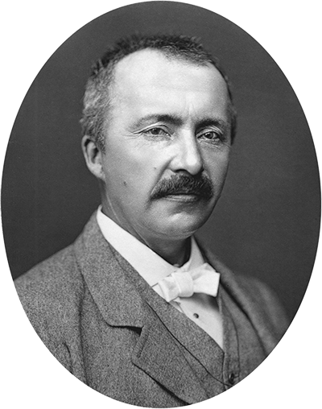
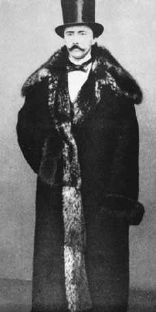

Introduction
Heinrich Schliemann was one of the most important figures in ancient Greek archaeology. Simply by using the epics of Homer, the Iliad and the Odyssey, Schliemann was able to pinpoint the ancient city of Troy, the locale of the Iliad, while other archaeologists dismissed his efforts and continued elsewhere. If not for his pursuits, the city of Troy and much of what we know about Greece from the time of the Iliad may never have been found.
Early Life
Schliemann was born to a poor pastor on January 6th, 1822, in the town of Neubukow, Mecklenburg, in Germany. His love of ancient Greece was sparked out of a history book his father gave him when he was seven years old. and it was furthered bolstered after he heard Homer's work spoken in the original Greek in the grocer's shop he worked at as a teenager. When poor health forced him to leave his job at the grocer's, he became a cabin boy on a ship heading to Venezuela, which was wrecked off the coast of Denmark. In Amsterdam he became the bookkeeper for a trading firm, and by the age of 24 Schliemann was able to fluently read and write in upwards of 15 different languages, ancient and modern Greek included. Schliemann's mastery of speech allowed him to become an able merchant, and his firm sent him to St. Petersburg in 1846, in which he founded a business on the indigo trade. Six years later he married his first wife, Ekaterina Lyschin, and soon after made his fortune as a military contractor during the Crimean war. In the 1850's he became a U.S. citizen, and at the age of 36 he returned to Russia to retire a wealthy man. With such affluence, free time, and continuing passion for ancient Greece, Schliemann set out to realize his dream: finding the mythical city of Troy described so realistically in Homer's epics.
Discovery of Troy
Knowing that there were references to an ancient city of Troy in other archaic records, such as Alexander the Great's visit to the supposed city, Schliemann began his search in Greece with just his money and his copy of the Iliad. By this time Schliemann had divorced his first wife, Ekaterina, and in 1869, he married a Greek schoolgirl named Sophia Engastromenos, a woman who could recite Homer from memory. Seven years earlier, a French geologist name Ferdinand Fouqué found evidence of a town buried under the results of the great eruption of mount Thera. The town was dated to have been from nearly 2000 BCE, making the site a great source of antiquity, prompting the English archaeologist Frederick Calvert to dig at Hisarlik. Schliemann felt that Calvert was on to something, and so continued Calvert's work in 1871, recklessly digging his way down a man-made mound. In May, 1873, Schliemann discovered the remains of an ancient city, filled with gold and jewelry, confirming his belief that he had found Homeric Troy. Shortly after in 1874, Schliemann published his discoveries for the first time in his paper Trojan Antiquity, in which he identified the treasures he found as the Treasure of Priam.
A Damaged Reputation
However, many of Schliemann's contemporaries were wary of his findings. They disapproved of the careless manner in which he dug through the Hissarlik site, going so far as to call it "the destructive manner of a grave robber." There was also the problem of Schliemann's manufacturing of some facts, as he lied about his wife being with him for the find, and this deceit made others wary of what else he could be covering up. There were rumors that he had even bought all the gold himself and buried it. While Schliemann did not fake the gold, he had duped the men he was working with to dig for it, as he had promised them that they would split the treasure. However, shortly after the treasure was discovered, Schliemann smuggled it out of Turkey and kept it all for himself. This led to a lawsuit from the Ottoman government, halting his excavations and further damaging his reputation. But in the April of 1876, the lawsuit was over, and Schliemann resumed his work.

Finds at Mycenae
Choosing to ignore the criticism he received for his finds at Troy, Schliemann moved on to the Greek mainland and began at Mycenae. Schliemann started with the excavation of the Mycenaean beehive tombs, known by their inhabitants as tholoi. In August, 1876, by the Lion Gate, Schliemann found a ring of stone slabs that contained five shaft graves, in which he found sixteen bodies and a large treasure of gold, silver, bronze, and ivory. Included within this treasure was the famous bronze burial mask, which Schliemann dubbed the Mask of Agamemnon, although it was never confirmed that the body was that of the great ruler.
Death
After Mycenae, Schliemann made a few fairly unsuccessful excavations in Ithaca in 1878. He went back to Troy with the help of his new assistant, Wilhelm Dörpfeld, who was able to better expose the stratigraphy at Troy, revolutionizing Schliemann's previous techniques. Schliemann's last great effort was made in 1884, again with Dörpfeld, where they excavated the fortified city of Tiryns, found near Mycenae. Nearing the end of his life, Schliemann began to suffer from great ear pain, and although undergoing a successful surgery, he collapsed on December 25th, 1890, due to not allowing himself enough time to recuperate. While the best doctors in Europe were discussing how to treat him, Schliemann died on December 26th, 1890, ending his search for ancient wonders.
Schliemann's Legacy
After Mycenae, Schliemann made a few fairly unsuccessful excavations in Ithaca in 1878. He went back to Troy with the help of his new assistant, Wilhelm Dörpfeld, who was able to better expose the stratigraphy at Troy, revolutionizing Schliemann's previous techniques. Schliemann's last great effort was made in 1884, again with Dörpfeld, where they excavated the fortified city of Tiryns, found near Mycenae. Nearing the end of his life, Schliemann began to suffer from great ear pain, and although undergoing a successful surgery, he collapsed on December 25th, 1890, due to not allowing himself enough time to recuperate. While the best doctors in Europe were discussing how to treat him, Schliemann died on December 26th, 1890, ending his search for ancient wonders.